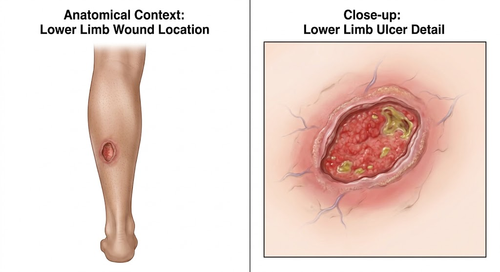
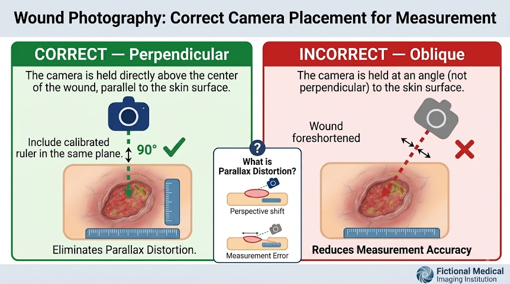
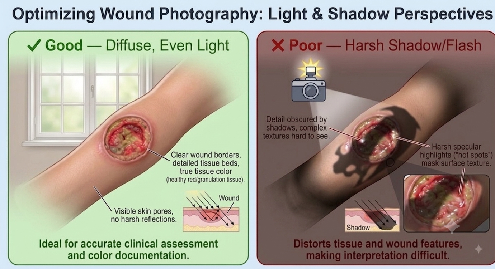
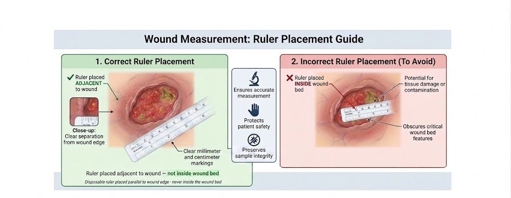

Press Esc or click outside to close
| Recommendation | Consensus |
|---|---|
| Obtain informed consent | ✔ |
| Respect patient dignity | ✔ |
| Use standardised photography technique | ✔ |
| Maintain consistent angle and distance | ✔ |
| Include wound measurements | ✔ |
| Secure digital storage | ✔ |
| Images supplement written documentation | ✔ |
| Support telehealth and remote review | ✔ |



